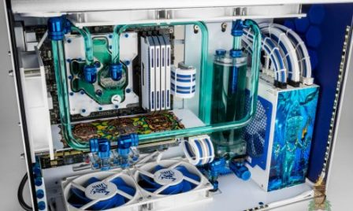

По-важни изучавани дисциплини са:
-
ARTIFICIAL INTELLIGENCE
Designing computer systems that simulate human thinking, learning, and reasoning abilities.
-
COMPUTER ARCHITECTURE
Designing and developing new, more powerful computing systems.
-

COMPUTER DESIGN
Research, design, and development of electronic computer components, such as microchips, microprocessors, circuit boards, etc.
-
OPERATING SYSTEMS AND NETWORKS
Designing and developing software and network systems.
-
ROBOTICS
Designing and developing robotic systems used in a variety of industries (e.g. industrial production).
-
SOFTWARE APPLICATIONS
Designing and developing computer software to research and solve problems outside of the computer engineering field (e.g. medicine).
Завършилите образователно-квалификационна степен " Web Fundamentalist " получават професионална квалификация "Мениджър по ВСИЧКО и на ВСЕКИ в ИКТ".
Какво може да се работи след завършване?
Завършилите тази специалност гарантирано получават постове като: ТОП мениджъри в различните нива на управление на Google, Amazon, Microsoft, Apple и други по желание.
Кои са преподавателите в тази специалност?
Звеното, което ръководи обучението на курса е Института по "Управление на БЪДЕЩИТЕ ТЕХНОЛОГИИ" към SoftUni. В него работят преподаватели с висока квалификация.
-
ВАЖНО!
Преди началото на курса всеки минава подготвителен лагер по ФУТБОЛ и ЕЗИКОВА ПОДГОТОВКА ПО АНГЛИЙСКИ с преподавател ХРИСТО СТОИЧКОВ!
-
ВАЖНО 2!
След завършването всеки получава ПОЖИЗНЕН, ЗАДЪЛЖИТЕЛЕН И ГАРАНТИРАН МИНИМАЛЕН БАЗОВ ДОХОД от 1000 ДОЛАРА месечно (За гаранцията и дохода пишете мейл до Илън Мъск, Шведският „министър на бъдещето“ или Финландските социални служби)!